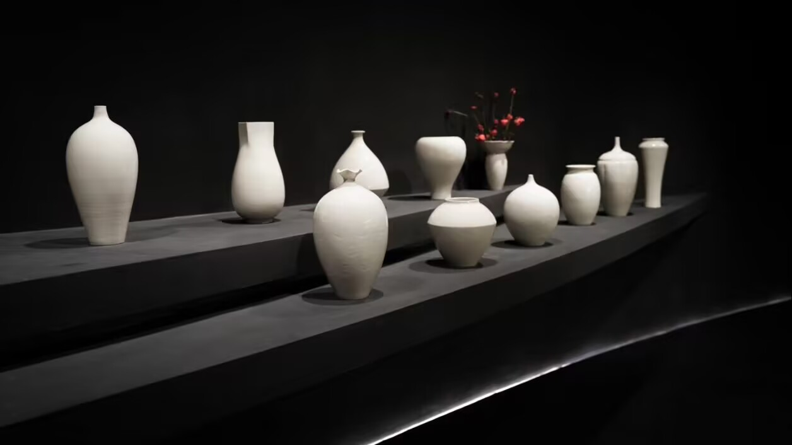
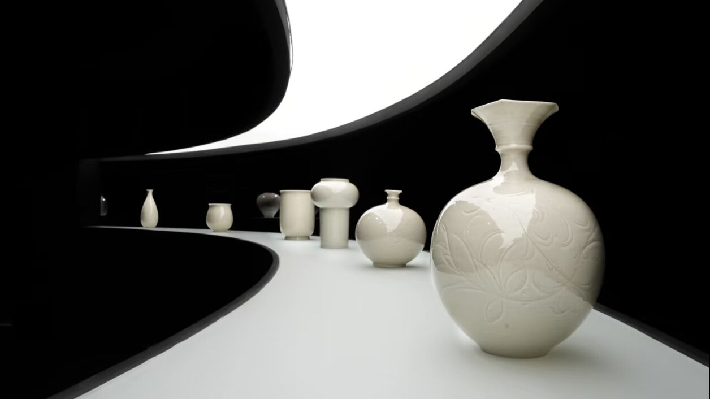
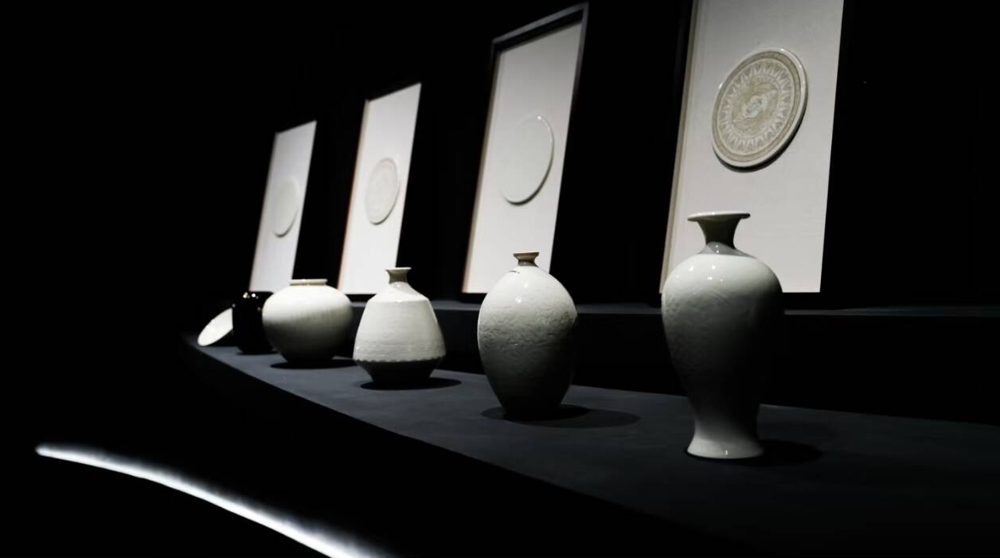

定窑简介
定窑窑址位于河北曲阳（古定州境内），烧造年代始于晚唐，北宋中后期为鼎盛期，是五大名窑中唯一以白瓷为主的窑口，也是宋代北方白瓷的代表，北宋中后期成为宫廷贡瓷窑口，金代延续烧造，元代逐渐衰落。
其造型精巧多样，以孩儿枕、梅瓶、葵口盘等日用瓷为主，孩儿枕是定窑最具标志性的器物；胎色洁白细腻，胎体轻薄，核心工艺为“覆烧法”，即将器物倒扣烧造，虽节省窑炉空间，但会导致器口无釉形成“芒口”，部分宫廷用瓷会在芒口处镶金、银、铜扣；纹饰以印花、刻花、划花为主，题材涵盖花卉、动物、几何纹等，款识常见“官”“新官”等宫廷贡瓷标记。
悬停放大查看细节


